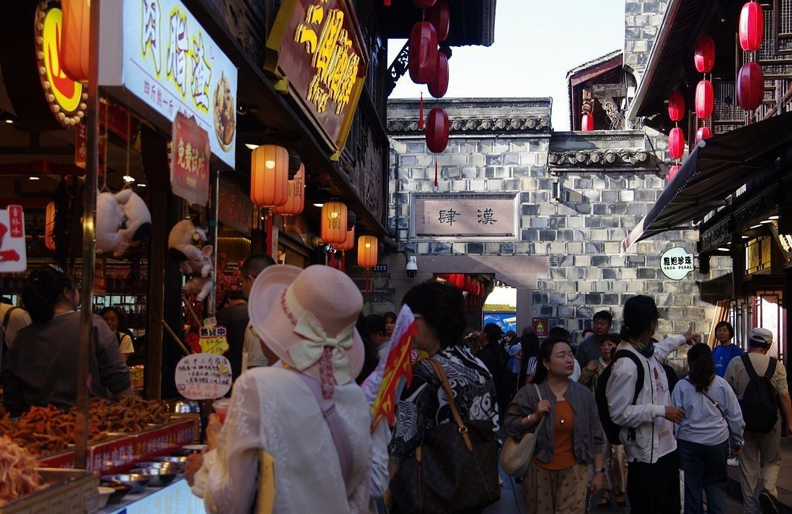
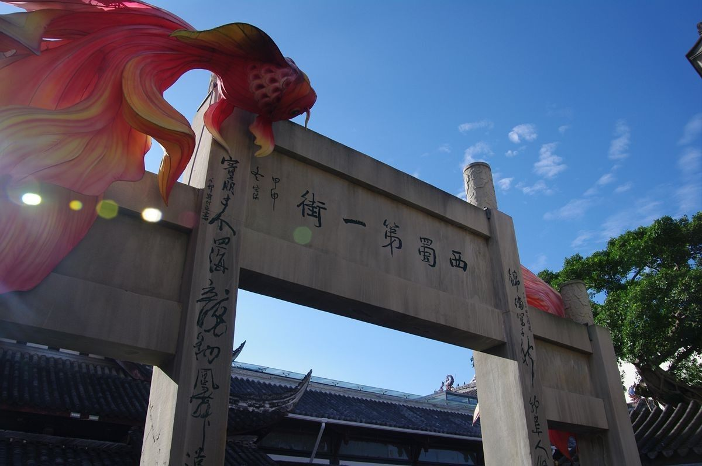
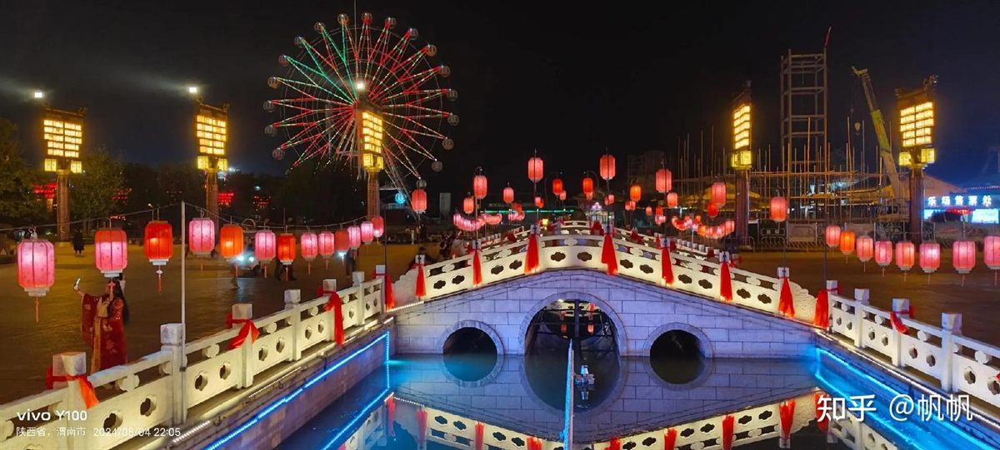

Jinli · 古风街区
最多红灯笼的民俗老街，成都夜生活第一站
一条550米的古街，浓缩川西民俗的精华。入夜后红灯笼次第亮起，吹糖人、看皮影、吃小吃，巴蜀烟火扑面而来。
Introduction
锦里古街毗邻武侯祠，是一条集川西民居、民俗客栈、特色餐饮与民间工艺于一体的民俗老街。街不长，却「藏着」戏台、茶馆、皮影、吹糖人、蜀绣与数不清的川味小吃，被誉为「西蜀第一街」，是体验成都夜生活与地道风情的最佳去处。
入夜红灯笼高挂，暖光洒满青石板，是成都夜景照的天花板。
三大炮、糖油果子、钵钵鸡、凉糕等川味小吃沿街铺展。
皮影、糖画、吹糖人、蜀绣现场制作，市井非遗鲜活上演。
Deep Dive

糯米团裹黄豆粉，击案而响三声，故名「三大炮」。这是游客到锦里必尝的第一口：软糯香甜，蘸上红糖浆与芝麻，甜到心里。

锦里以灯笼闻名，千百盏红灯笼沿街悬挂，入夜后连成一片暖红光河。青瓦、翘檐与灯影交叠，随手一拍都是古韵大片。

锦里不止有吃的，更是一场市井文化展演：皮影戏班点灯开演，糖画师傅挥勺成画，蜀绣绣娘飞针走线……手艺人们在街边守着一方摊位，把祖辈的绝活做给来往的人看。
锦里紧邻武侯祠（出口即达），两大景点强烈建议联游：白天逛武侯祠，傍晚到锦里吃晚餐、看夜景。
FAQ
Key Points
黄昏入街、夜晚出片，红灯笼长廊此生必看。
三大炮、钵钵鸡、糖油果子、凉糕、甜水面。
两景点紧邻，白天祠庙、夜晚老街最合理。
地铁高升桥站步行约800米，打车定位武侯祠即可。